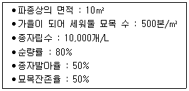
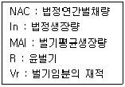
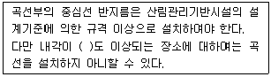
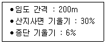
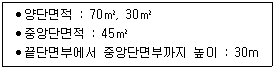

산림기사 (2016-05-08 기출문제)
1과목: 조림학
1. 발아율이 85%이고 발아세가 80%인 종자의 경우 발아율에서 발아세를 뺀 값인 5%의 종자에 대한 설명으로 옳은 것은?
- 발아가 빠르게 되는 종자이다.
- 불량묘가 될 가능성이 높은 종자이다.
- 묘포에 파종할 때 발아가 되지 않는 종자이다.
- 종자를 채취할 때 섞여 들어간 다른 수종의 종자이다.
(정답률: 76%)

2. 산림 갱신 방법 중 예비벌, 하종벌, 후벌 단계를 거치는 작업종은?
- 개벌작업
- 택벌작업
- 모수작업
- 산벌작업
(정답률: 90%)
3. 침엽수의 가지치기 작업방법으로 옳은 것은?
- 으뜸가지 이상의 가지를 친다.
- 줄기와 직각이 되도록 잘라낸다.
- 생장 휴지기에 실시하는 것이 좋다.
- 초두부까지 가지를 쳐내어 통직한 간재를 생산하도록 한다.
(정답률: 82%)
4. 산림 생태적인 면에서 환경친화적인 작업종과 가장 거리가 먼 것은?
- 개벌작업
- 택벌작업
- 모수작업
- 산벌작업
(정답률: 88%)
5. 회귀년을 고려하여야 할 작업종은?
- 개벌작업
- 택벌작업
- 모수작업
- 산벌작업
(정답률: 84%)
6. 일반 공기 중에는 약 78%가 질소로 구성되어 있으나 식물이 이를 직접 이용하기는 어렵다. 식물이 질소를 이용 가능한 형태로 바꾸는 것을 무엇이라 하는가?
- 질소 이동
- 질소 환원
- 질소 순환
- 질소 고정
(정답률: 84%)
7. 극양수에 해당하는 수종은?
- 주목
- 단풍나무
- 서어나무
- 일본잎갈나무
(정답률: 63%)
8. 인공림 침엽수의 수형목 지정기준으로 옳지 않은 것은?
- 상층 임관에 속할 것
- 수관이 넓고 가지가 굵을 것
- 밑가지들이 말라서 떨어지기 쉽고 그 상처가 잘 아물 것
- 주위 정상목 10본의 평균보다 수고 5%, 직경 20% 이상 클 것
(정답률: 87%)
9. 묘포 입지선정 조건으로 가장 부적합한 것은?
- 완경사지
- 점토질 토양
- 관개, 배수가 유리한 곳
- 교통과 노동력 공급이 유리한 곳
(정답률: 95%)
10. 식생조사에서 빈도에 대한 설명으로 옳지 않은 것은?
- 빈도는 방형구의 크기에 영향을 받지 않는다.
- 어느 종이 출현한 방형구 수와 총조사 방형구 수의 백분비로 표시된다.
- 어느 종이 얼마나 넓은 지역에 걸쳐 출현하는가를 알기 위한 척도이다.
- 군락 내에 있어서 종간의 양적관계를 알기 위한 척도로는 상대빈도를 이용한다.
(정답률: 79%)
11. 난대 수종으로 일반적으로 온대 중부 이북에서 조림하기 어려운 수종은?
- Quercus acuta
- Abies holophylla
- Pinus Koraiensis
- Fraxinus rhynchophylla
(정답률: 58%)
12. 숲가꾸기 품셈에는 수종별, 흉고직경벌 간벌 후 입목본수기준이 제시되어 있다. 흉고직경이 20cm인 경우에 간벌 후 ha당 입목본수가 가장 적은 수종은?
- 편백
- 삼나무
- 참나무류
- 일본잎갈나무
(정답률: 52%)
13. 식토에 관한 설명으로 옳지 않은 것은?
- 식토는 사토에 비하여 보수력이 높다.
- 식토는 사토보다 식물의 뿌리 발달에 유리하다.
- 식토는 사토에 비하여 양이온치환용량(C.E.C)이 크다.
- 식토는 토양수분함량이 낮아질 때 거북등처럼 갈라지나 사토는 그렇지 않다.
(정답률: 69%)
14. 정상적인 생육을 위해 무기양분을 가장 많이 요구하는 수목은?
- 향나무
- 소나무
- 오리나무
- 느티나무
(정답률: 56%)
15. 개화 후 다음 해 10월 경에 종자가 성숙하는 수종은?
- Quercus dentata
- Quercus serrata
- Quercus mongolica
- Quercus acutissima
(정답률: 54%)
16. 잣나무 성목을 대상으로 실시한 가지치기 작업이 임목에 미치는 영향으로 옳지 않은 것은?(오류 신고가 접수된 문제입니다. 반드시 정답과 해설을 확인하시기 바랍니다.)
- 무절재의 생산
- 수고생장 촉진
- 직경생장 촉진
- 수간의 완만도 향상
(정답률: 44%)
17. 잣나무에 대한 설명으로 옳지 않은 것은?
- 침엽이 5개씩 모아 난다.
- 종자에 달린 날개는 퇴화되어 있다.
- 어려서 음수이며 커감에 따라 햇빛 요구량이 줄어든다.
- 한 대수종으로 토심이 깊고 비옥하고 적윤한 곳에서 잘 자란다.
(정답률: 91%)
18. 임목의 개화결실을 촉진시키는 방법으로 가장 효과가 적은 것은?
- 도태간벌.
- 환상박피
- 충분한 비료주기
- 생장촉진 호르몬 처리
(정답률: 67%)
19. 노지에서 1년생으로 상체하는 것이 적합한 수종은?
- 곰솔
- 잣나무
- 전나무
- 가문비나무
(정답률: 55%)
20. 다음과 같은 조건에서 소나무 종자를 산파하려 할 때 파종량은?(오류 신고가 접수된 문제입니다. 반드시 정답과 해설을 확인하시기 바랍니다.)

- 1L
- 2L
- 3L
- 4L
(정답률: 49%)
2과목: 산림보호학
21. 밤나무 줄기마름병 방제법으로 올지 않은 것은?
- 질소비료를 적게 준다.
- 내병성 품종을 재배한다.
- 상처 부위에 도포제를 바른다.
- 중간기주인 현호색을 제거한다.
(정답률: 76%)
22. 거미의 외부 형태를 구분한 것으로 올은 것은?
- 머리가슴, 배 2부분
- 머리, 가슴, 배 3부분
- 머리가슴, 꼬리 2부분
- 머리, 가슴, 꼬리 3부분
(정답률: 74%)
23. 피소(볕데기) 현상이 가장 잘 발생하는 것은?
- 늦은 가을 기온이 내려갈 때
- 추운 겨울날 기온이 급감할 때
- 봄에 수목의 생리작용이 시작될 때
- 더운 여름날 강한 직사광선을 받았을 때
(정답률: 91%)
24. 희석하여 살포하는 약제가 아닌 것은?
- 입제
- 액제
- 수화제
- 캡슐현탁제
(정답률: 69%)
25. 파이토플라스마를 매개하는 해충은?
- 광릉긴나무좀
- 담배장님노린재
- 북방수염하늘소
- 복숭아혹진딧물
(정답률: 82%)
26. 담자균류에서 발생되지 않은 포자는?
- 녹포자기 안의 녹포자
- 녹병정자기 안의 정자
- 분생포자각 안의 분생포자
- 겨울포자퇴 안의 겨울포자
(정답률: 59%)
27. 흡즙성 해충에 속하는 것은?
- 솔나방
- 박쥐나방
- 솔껍질깍지벌레
- 오리나무잎벌레
(정답률: 80%)
28. 소나무와 참나무류에 군집하여 생활하는 조류가 산성을 띤 배설물에 의해 임목을 고사시키는 것은?
- 백로, 왜가리
- 참새, 할미새
- 박새, 산까치
- 어치, 산비둘기
(정답률: 80%)
29. 소나무좀에 대한 설명으로 옳지 않은 것은?
- 연1회 발생한다..
- 수피 속에서 알로 월동한다.
- 수피를 뚫고 들어가 산란한다.
- 쇠약한 나무, 고사한 나무에 주로 기생하여 가해한다.
(정답률: 68%)
30. 암컷만으로 생식이 가능한 해충은?
- 솔나방
- 소나무좀
- 솔잎혹파리
- 밤나무혹벌
(정답률: 74%)
31. 곤충의 완전변태에 해당하는 것은?
- 알→유충→성충의 과정을 거치는 것
- 알→약충→성충의 과정을 거치는 것
- 알→유충→번데기→성충의 과정을 거치는 것
- 알→약충→번데기→성충의 과정을 거치는 것
(정답률: 87%)
32. 약제를 식물체의 줄기, 잎 등에 살포하여 부착시켜 식엽성 해충이 먹이와 함께 약제를 섭취하여 독작용을 일으키는 살충제는?
- 기피제
- 유인제
- 소화중독제
- 침투성 살충제
(정답률: 75%)
33. 잣나무 털녹병균의 침입부위와 시기가 맞는 것은?
- 3월 ~ 4월에 잎으로
- 3월 ~ 4월에 줄기로
- 9월 ~ 10월에 잎으로
- 9월 ~ 10월에 줄기로
(정답률: 55%)
34. 수목병의 발생원인 중 주인에 해당하는 것은?
- 인간의 활동성
- 기주의 감수성
- 환경의 유도성
- 병원체의 전염성
(정답률: 69%)
35. 토양에 의해 전염을 하지 않는 것은?
- 그을음병
- 뿌리혹병
- 모잘록병
- 자주빛날개무늬병
(정답률: 77%)
36. 북미가 원산지이며 연 2회 이상 발생하고 100여종의 활엽수를 가해하며 번데기로 월동하는 해충은?
- 매미나방
- 미국흰불나방
- 어스렝이나방
- 천막벌레나방
(정답률: 90%)
37. 방화선 설치 위치로 가장 적절한 것은?
- 급경사지
- 고사목 집적 지역
- 관목 및 임목밀생지
- 능선 바로 뒤편 8~9부 능선
(정답률: 79%)
38. 다음 수목병 중에서 병원균의 유형이 다른 것은?
- 뽕나무 오갈병
- 벚나무 빗자루병
- 오동나무 빗자루병
- 대추나무 빗자루병
(정답률: 88%)
39. 유충이 소나무나 곰솔의 엽초에 쌓인 두 침엽 접합 부위에 혹을 만들어 나무 생육에 피해를 주는 해충은?
- 솔나방
- 솔잎혹파리
- 솔수염하늘소
- 솔껍질깍지벌레
(정답률: 85%)
40. 병에 의해 식물체 조직 변화로 외관의 이상을 나타내는 것은?
- 병징
- 표징
- 발병
- 감염
(정답률: 61%)
3과목: 임업경영학
41. 작업급의 영급 관계가 편중되어 노령림이 너무 많거나 유령림이 너무 많을 때 윤벌기로 구한 연벌량에서 오는 불이익을 적게 하여 수확량을 대략 균등하게 지속시키기 위해서 채택하는 생산기간은?
- 정리기
- 회귀년
- 갱신기
- 윤벌기
(정답률: 76%)
42. 임업경영은 목적에 따라 종속적, 부차적, 주업적 임업경영으로 나눌 수 있다. 이 중 종속적 임업경영에 대한 설명으로 옳지 않은 것은?
- 주요 생산적 임업의 용역을 제공하는 것이다.
- 주업경영의 생산을 내부적으로 지탱하기 위한 것이다.
- 주요 생산적 임업의 생산에 필요한 자재를 공급하는 것이다.
- 생산요소의 유휴화를 막고 이용율을 높여 경영전체의 수익을 높이기 위한 것이다.
(정답률: 55%)
43. 다음 보기의 조건을 활용한 관계식으로 가장 적합한 것은?

- NAC = In = MAI÷R = Vr
- NAC = In = MAI×R = Vr
- NAC = 2×In = MAI÷R = 2×Vr
- NAC = 2×In = MAI×R = 2×Vr
(정답률: 62%)
44. 산림의 생산력 발전 단계 중 노동생산성이 작업노동과 관리노동으로 분리 취급된 단계는?
- 자연력 통제의 단계
- 자연력 의존의 단계
- 자연자원 보존의 단계
- 자본장비 확충의 단계
(정답률: 62%)
45. 자산, 부채, 자본의 관계를 잘 나타낸 것은?
- 자산 = 자본 - 부채
- 자산 = 자본 + 부채
- 자산 = 부채 - 자본
- 자산 = 자본 ÷ 부채
(정답률: 85%)
46. 산림교육의 활성화에 관한 법률에서 제시된 산림교육전문가가 아닌 것은?
- 숲해설가
- 유아숲지도사
- 산림치유지도사
- 숲길체험지도사
(정답률: 47%)
47. 법정상태 때의 임목본수와 현재 생육하고 있는 임목본수의 비로 표시하는 것은?
- 입목도
- 소밀도
- 울폐도
- 폐쇄도
(정답률: 86%)
48. 연이율이 6%이고 매년 240만원씩 영구히 순수익을 얻을 수 있는 산림을 3600만원에 구입하였을 때의 손익은?
- 이익 24만원
- 손해 24만원
- 이익 400만원
- 손해 400만원
(정답률: 62%)
49. 산림경영계획의 체계에 대한 설명으로 옳은 것은?
- 국가적 또는 지역적인 관점에서의 종합적인 계획에 근간을 두고 있다.
- 산림청장은 지역산림계획을 5년 단위로 공표하거나 상황에 따라 수정한다.
- 국유림을 경영∙관리하는 기관은 산림청 - 국유림관리소 - 지방산림청 순서체계로 구성된다.
- 산림기본계획은 지역산림계획에 따라 특별시장, 광역시장, 도지사 및 산림청장이 수립한다.
(정답률: 53%)
50. 임업투자계획의 경제성을 평가하는 방법이 아닌 것은?
- 순현재가치의 방법
- 편익비용비의 방법
- 내부수익률의 방법
- 수확표에 의한 방법
(정답률: 79%)
51. 산림문화 휴양에 관한 법률에서 정의된 "국민의 정서함양, 보건휴양 및 산림교육 등을 위하여 조성한 산림"에 해당하는 것은?
- 숲길
- 삼림욕장
- 치유의 숲
- 자연휴양림
(정답률: 78%)
52. 산림평가방법이 올바르게 짝지어진 것은?
- 유령림 - 비용가법
- 중령림 - 기망가법
- 장령림 - 매매가법
- 성숙림 - Glaser식
(정답률: 79%)
53. 산림의 6가지 기능 중 생태∙문화 및 학술적으로 보호할 가치가 있는 산림을 보호∙보전하기 위한 기능은?
- 수원함양기능
- 자연환경보전기능
- 생활환경보전기능
- 산지재해방지기능
(정답률: 80%)
54. 감가상각비에 대한 설명으로 옳지 않은 것은?
- 고정자산의 감가원인은 물리적 원인과 기능적 원인으로 나눌 수 있다.
- 감가상각비는 시간의 경과에 따른 부패, 부식 등에 의한 가치의 감소를 포함한다.
- 새로운 발명이나 기술진보에 따른 사용가치의 감가는 감가상각비로 처리하지 않는다.
- 시장변화 및 제조방법 등의 변경으로 인하여 사용할 수 없게 된 경우에도 감가상각비로 처리한다.
(정답률: 84%)
55. 면적이 120ha, 윤벌기 40년, 1영급이 10영계인 산림의 법정영급면적과 법정영계면적은?
- 3ha, 10ha
- 3ha, 30ha
- 30ha, 3ha
- 30ha, 10ha
(정답률: 61%)
56. 복합임업경영의 주목적으로 가장 적합한 것은?
- 임업 주수입의 증대
- 임업 조수입의 증대
- 임업경영지의 대단지화
- 임업수입의 조기화와 다양화
(정답률: 82%)
57. 매년 산림경영관리에 투입되는 비용이 20만원, 연이율이 5%인 경우에 자본가는?
- 4만원
- 19만원
- 1백만원
- 4백만원
(정답률: 74%)
58. 임목 및 임분을 측정하는 경우 불완전한 기계 또는 계산에 의한 오차는?
- 과오
- 부주의
- 누적오차
- 상쇄오차
(정답률: 69%)
59. 산림평가에서 임업이율을 고율로 평정할 수 없고 오히려 보통이율보다 약간 저율로 평정해야 하는 이유에 해당하지 않는 것은?
- 산림소유의 안정성
- 산림수입의 고소득성
- 산림관리경영의 간편성
- 문화발전에 따른 이율의 저하
(정답률: 64%)
60. 측고기를 사용할 때 주의사항으로 옳지 않은 것은?
- 경사지에서 측정할 때에는 오차가 생기기 쉬우므로 여러 방향에서 측정하여 평균해야 하고 가급적 등고선 방향으로 이동하여 측정한다.
- 여러 방향에서 측정하면 오차값을 줄일 수 있다.
- 측정하고자 하는 나무 끝과 근원부가 잘 보이는 지점을 선정해야 한다.
- 측정위치가 멀면 오차가 생기므로 나무 높이의 절반 정도 떨어진 곳에서 측정하는 것이 좋다.
(정답률: 87%)
4과목: 임도공학
61. 불도저의 작업 범위가 아닌 것은?
- 땅파기
- 노면 다짐
- 벌도목 적재
- 벌목 및 제근
(정답률: 56%)
62. 임도 시공 시 흙깎기 공사에 대한 설명으로 옳지 않은 것은?
- 임도에 사용된 흙은 함수비가 낮을수록 좋다.
- 현장에 적당한 간격으로 흙일겨냥틀을 설치한다.
- 근주지름 30cm 이상의 입목은 체인톱으로 벌채한다.
- 암석의 굴착식 경암은 불도저에 부착된 리퍼로 굴착하는 것이 유리하다.
(정답률: 57%)
63. 지선임도의 설계속도 기준은?
- 30 ~ 10km/시간
- 30 ~ 20km/시간
- 40 ~ 20km/시간
- 40 ~ 30km/시간
(정답률: 70%)
64. 사면에 설치하는 소단의 효과가 아닌 것은?
- 사면의 안정성을 높인다.
- 임도의 시공비를 절약할 수 있다.
- 유지보수작업시 작업원의 발판으로 이용할 수 있다.
- 유수로 인하여 사면에서 발생하는 침식의 진행을 방지한다.
(정답률: 78%)
65. 교각법에 의해 임도 곡선을 설치하고자 한다. 교각이 60°이고 곡선 반지름이 20m 일 때 접선장을 구하는 계산식은?
- 20m × tan30°
- 40m × tan30°
- 20m × tan60°
- 40m × tan60°
(정답률: 62%)
66. 다음 ()안에 해당하는 것은?

- 125
- 135
- 145
- 155
(정답률: 81%)
67. 등고선에 대한 설명으로 옳지 않은 것은?
- 등고선은 도중에 소실되지 않으며 폐합된다.
- 낭떠러지 또는 굴인 경우 등고선이 교차한다.
- 최대경사의 방향은 등고선에 평행한 방향이다.
- 지표면의 경사가 일정하면 등고선 간격은 같고 평행하다.
(정답률: 73%)
68. 동일사면에 배향곡선을 2개 설치하려 한다. 다음 조건에 해당하는 배향곡선의 적정간격은?

- 20m
- 40m
- 500m
- 1000m
(정답률: 35%)
69. 임의의 등고선과 교차되는 두 점을 지나는 임도의 노선 기울기가 10%이고, 등고선 간격이 5m일 때 두 점간의 수평거리는?
- 5m
- 10m
- 50m
- 100m
(정답률: 72%)
70. 레벨을 이용한 고저측량 시 기고식야장법에 의한 지반고를 구하는 방법은?
- 기계고 - 전시
- 기계고 + 전시
- 기계고 - 후시
- 기계고 + 후시
(정답률: 69%)
71. 스타디아측량을 실시한 결과 연직각 15°, 협장 1.64m일 때 수평거리는? (단, 스타디아 정수 K = 100, C = 0)
- 약 153m
- 약 158m
- 약 306m
- 약 317m
(정답률: 23%)
72. 암석의 굴착 시 리퍼작업이 가장 어려운 것은?
- 사암
- 혈암
- 점판암
- 안산암
(정답률: 61%)
73. 점착성이 큰 점질토의 두꺼운 성토층 다짐에 가장 효과적인 롤러는?
- 탬핑 롤러
- 탠덤 롤러
- 머캐덤 롤러
- 타이어 롤러
(정답률: 79%)
74. 산록부와 산복부에 설치하는 임도이며, 임도 하단부에 있는 임목을 가선집재 방법으로 상향 집재할 필요가 있다하더라도 임도의 노선선정은 하단부로부터 점차적으로 선형을 계획하는 임도는?
- 사면임도
- 계곡임도
- 능선임도
- 산정부 임도
(정답률: 59%)
75. 자침편차 중 일차에 해당하는 변화량은?
- 0'~ 5'
- 5' ~ 10'
- 15' ~ 20'
- 20' ~ 25'
(정답률: 71%)
76. 임도의 종단기울기가 5%이고 곡선 반지름이 30m일 때 물매곡율비는?
- 0.66
- 1
- 6
- 60
(정답률: 63%)
77. 최소곡선반지름의 크기에 영향을 끼치는 인자가 아닌 것은?
- 도로의 너비
- 임도의 밀도
- 반출할 목재의 길이
- 차량의 구조 및 운행속도
(정답률: 67%)
78. 보통골재에 해당하는 것은?
- 비중이 2.50 이하인 골재
- 비중이 2.50 ~ 2.65 정도의 골재
- 비중이 2.65 ~ 2.80 정도의 골재
- 비중이 2.80 이상인 골재
(정답률: 74%)
79. AB 측선의 방위가 S45°W이면 그 역방위는?
- S45°W
- S45°E
- N45°W
- N45°E
(정답률: 83%)
80. 다음 조건에서 각주공식에 의한 체적(m3)은?

- 1450
- 1900
- 2350
- 2800
(정답률: 38%)
5과목: 사방공학
81. 유량이 40m3/s이고 평균유속이 5m/s일 때 수로의 횡단면적(m2)은?
- 0.5
- 8
- 45
- 200
(정답률: 81%)
82. 산지사방에서 비탈다듬기공사를 실시할 경우 단면 A와 B의 단면적이 20m2와 30m2이고, 단면 사이의 길이가 50m일 때 평균단면적법에 의해 계산된 토사량(m3)은?
- 500
- 1250
- 2500
- 7500
(정답률: 75%)
83. 해풍에 의해 날리는 모래를 억류하고 퇴적시켜 인공사구를 조성하기 위해 사용하는 공법은?
- 모래덮기
- 사초심기
- 정사울세우기
- 퇴사울세우기
(정답률: 80%)
84. Thiessen법에 의한 유역의 평균 강수량 강수량 산정법에 대한 설명으로 옳은 것은?
- 평야지역에서 강우분포가 비교적 균일한 경우에 사용하는 것이 좋다.
- 산악 효과는 고려되고 있지만 우량계의 분포상태가 무시되어 부정확하다.
- 우량계에 의한 인접한 두 지배 면적간의 평균 강우량을 이용하여 산정한다.
- 산악 효과는 무시하지만 우량계의 분포상태가 고려되어 산술평균법보다 정확하여 가장 널리 사용한다.
(정답률: 64%)
85. 사방녹화용 재래 초본식물은?
- 겨이삭
- 오리새
- 김의털
- 지팽이풀
(정답률: 67%)
86. 토양침식의 형태 중 중력침식에 해당하지 않는 것은?
- 붕괴형 침식
- 지활형 침식
- 지중형 침식
- 유동형 침식
(정답률: 73%)
87. 비탈면 안정을 위한 녹화공법으로만 나열된 것은?
- 새심기, 힘줄박기
- 비탈덮기, 줄떼다지기
- 씨뿌리기, 산비탈수로내기
- 비탈다듬기, 등고선구공법
(정답률: 75%)
88. 콘크리트블록과 같은 가벼운 블록으로 비탈면을 처리하기 곤란한 지역에서 거푸집을 설치하고 콘크리트치기를 하는 비탈안정공법은?
- 비탈힘줄박기 공법
- 비탈지오웨브 공법
- 비탈블록붙이기 공법
- 비탈격자틀붙이기 공법
(정답률: 80%)
89. 비탈 식재녹화공법 중에서 비탈면 기울기가 1:1보다 완만한 비탈에 전면적으로 떼를 붙여서 비탈을 일시에 녹화하는 공법은?
- 떼단쌓기
- 줄떼다지기
- 선떼붙이기
- 평떼붙이기
(정답률: 69%)
90. 흐르는 물에 의한 침식이 아닌 것은?
- 면상침식
- 누구침식
- 우격침식
- 구곡침식
(정답률: 81%)
91. 사방댐과 비교한 골막이의 특징으로 옳지 않은 것은?
- 규모가 작다.
- 토사퇴적 기능은 없다.
- 계류의 상류에 설치한다.
- 대수측만 축설하고 반수측은 채우기를 한다.
(정답률: 71%)
92. 수류(Flow)에 대한 설명으로 옳지 않은 것은?
- 홍수시의 하천은 정류에 속한다.
- 정류는 등류와 부등류로 구분할 수 있다.
- 자연하천은 엄밀한 의미에서는 등류 구간이 없다.
- 수류는 시간과 장소를 기준으로 하여 정류와 부정류로 구분할 수 있다.
(정답률: 60%)
93. 산복사방공사에서 현지조사 시 실시해야 할 내용이 아닌 것은?
- 사방사업 면적 산출
- 사방사업 대상지 황폐화 원인
- 공사에 필요한 자재의 현지 채취 가능성
- 멸종위기식물, 희귀식물 등이 있는지 유무
(정답률: 48%)
94. 투과형 버트리스 사방댐에 대한 설명으로 옳지 않은 것은?
- 측압에 강하다.
- 스크린댐이 가장 일반적인 형식이다.
- 주로 철강제를 이용하여 공사기간을 단축할 수 있다.
- 구조적으로 댐 자리의 폭이 넓고 댐 높이가 낮은 곳에 시공한다.
(정답률: 66%)
95. Bazin 구공식에서 자갈이 있는 불규칙한 자연수로의 조도계수는 어느 것인가?αβ
- α = 0.0004, β = 0.0007
- α = 0.00024, β = 0.00006
- α = 0.00028, β = 0.00035
- α = 0.00019, β = 0.0000133
(정답률: 52%)
96. 계류 곡선부에 설치하는 사방댐의 방향은 유심선과 어느 각도를 이루도록 계획하는 것이 가장 안정한가?
- 45도
- 60도
- 90도
- 180도
(정답률: 79%)
97. 야계사방공사의 시공목적과 가장 거리가 먼 것은?
- 계류바닥의 종횡침식을 방지한다.
- 붕괴지의 산각을 고정하는 산지사방의 기초가 된다.
- 산각을 고정하여 황폐계류와 계간을 안정상태로 유도한다.
- 인위적으로 발생한 사면의 안정화와 경관조성을 추구한다.
(정답률: 68%)
98. 누구막이에 대한 설명으로 옳지 않은 것은?
- 땅속흙막이보다 작은 규모의 대상지에 계획한다.
- 하류를 향하여 중심선에 직각방향으로 축설한다.
- 수로개설 바닥파기 후 잉여토사와 적치가 필요한 곳에 계획한다.
- 산복수로를 계획할 때에 횡공작물로써 수로의 기울기를 완화시키고자 하는 곳에 시공한다.
(정답률: 38%)
99. 떼의 규격은 40cm × 25cm이고 흙두께가 5cm정도일 때 6급 선떼붙이기의 1m당 떼 사용매수는?
- 3.75매
- 6.25매
- 7.50매
- 10.00매
(정답률: 78%)
100. 돌쌓기 공사에 사용될 수 있도록 특별한 규격으로 다듬은 석재는?
- 야면석
- 막깬돌
- 견치돌
- 호박돌
(정답률: 84%)